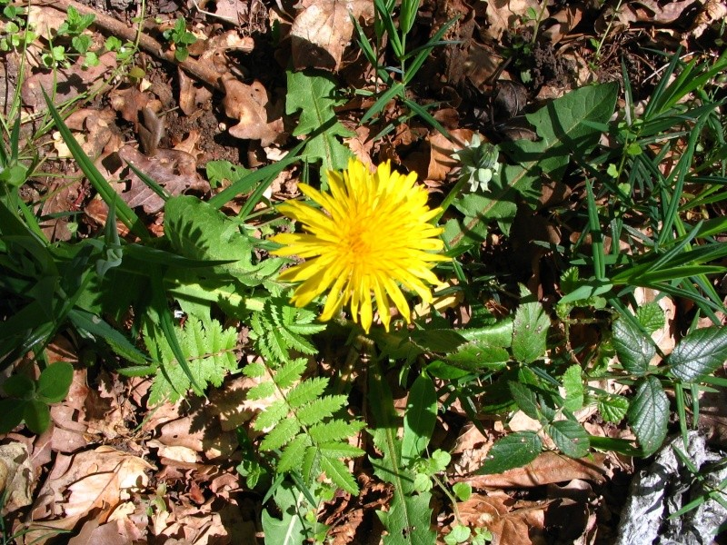
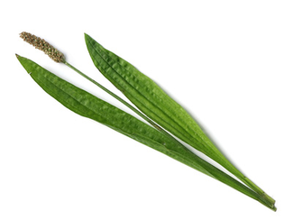
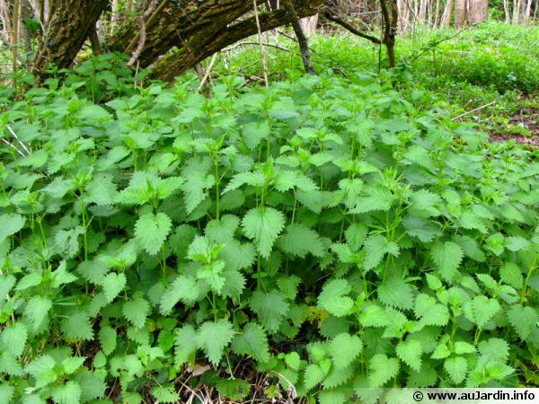

Pour cela, nous allons rapidement resituer les plantes et les arbres dans leur milieu naturel, la forêt ou les plaines entre autre. Ils ont un rôle majeur dans l'écosystème.
C'est quoi un écosystème ? C'est l'ensemble des êtres vivants qui composent une zone. La forêt est une zone par exemple. On y voit des animaux, des insectes, des plantes, des arbres… Comment tout cela fonctionne ? Faut-il un bon appareil photo pour réaliser une photo-synthèse ?
Regarde le dessin et essaye d'expliquer l'utilité de chacun sur ta feuille, ensuite clique sur la réponse pour savoir si tu as bon !
| Le Soleil | Les nuages | L'atmosphère | Le sol |
|---|---|---|---|
|
Il fournit l'énergie lumineuse, élément essentiel de la
photo-synthèse (lumière + eau + minéraux = sève sucrée = nourriture
pour plantes et arbres). Mais aussi la chaleur qui déclenche le
cycle des saisons.
|
Ils apportent de l'eau bien sûr, qui est le carburant des végétaux.
Ils finalisent et relance le cycle de l'eau. Certaines plantent
aiment l'ombre qu'ils amènent en cachant parfois le soleil.
|
C'est le fournisseur d'oxygène par excellence, sans lui pas d'air
sur terre et pas de protection contre la radioactivité solaire
(bonjour les zombies sinon !).
|
Lieu où vivent les matières minérales (les petits bouts de cailloux,
super bon pour tous) et où tombe et est stockée, l'eau. Il nourrit
la flore.
|
| Les animaux | Les arbres | Les plantes | La chaîne alimentaire |
|
Les insectes contribuent au développement des plantes, en mangeant
certaines, en aidant d'autres à pousser, en rejetant des matières
bio (le popo…). Les animaux aussi, avec leur popo mais également en
régulant les espèces selon leur régime alimentaire.
|
Ils font tourner la boutique, consommation de minéraux, absorption
d'eau, recyclage de l'eau et de l'air pollué (ils mangent du
CO2 et relâchent de l'air pur !). Ils donnent de la
matière pour nourrir le sol (branches, feuilles, fruits).
|
Elles servent essentiellement à se faire manger il est vrai, elles
nourrissent les herbivores. Elles servent aussi à attirer les
insectes qui amènent la vie dans un écosystème. Elles préparent le
terrain pour l'implantation des arbres.
|
C'est l'histoooooooooire de la viiiiiiiiiie (ingonyamaaaaaa). Les
plantes nourrissent les herbivores et les insectes, qui nourrissent
les carnivores, qui en mourant nourrissent des insectes et des
plantes et… C'est un cycle infini (et immmmorrrrrrtellllll).
|
Tu l'as bien compris, les plantes et les arbres nourrissent le sol, les insectes, les animaux, l'atmosphère, ils retiennent l'eau, participent à la purifier ou à participer à son cycle de consommation. Rien que l'herbe, qui par sa présence représente plein de trous dans le sol, trous par lesquels il peut respirer la nuit pour relâcher la chaleur qu'il a emmagasiné dans la journée, cela se nomme la rosée du matin. Tu y avais déjà songé, à quel point le sol est proche de notre peau et l'herbe est proche de nos poils ? C'est vivant tout ça !
C'est saaaaaaaa vie, mais c'est aussi la nôtre !
Maintenant que tu sais à quoi servent les arbres et les plantes, voyons un peu comment ils s'organisent. C'est un peu une collocation, chacun sa place, chacun ses endroits favoris, et l'écosystème sera bien gardé (les sangliers aussi, c'est important pour les banquets ça, les sangliers !).
L'écosystème forestier est organisé en escalier, du plus bas au plus haut, on appelle ça des strates (des étages). Parfois elles sont progressives (petit, moyen, grand, très grand) et parfois c'est le bazar, c'est pour ça que la nature nous surprend autant et qu'il faut se balader toujours à droite à gauche pour apprendre, comparer.
| Strate muscinale | Strate herbacée | Strate arbustive | Strate arborée |
|---|---|---|---|
| 1-9 cm | 10-80 cm | 1-10 m | 11-30 m |
| Sol et espèces rampantes (mousses, lichens, plantes naines, champignons) | Plantes basses (fleurs, fougères, bruyère, ronces, orties) | Plantes hautes et petits arbres (houx, buis, arbres ados) | Arbres hauts (végétaux ligneux = arbres) |
| Habille le sol et le rend réceptif aux graines, attire insectes rampants et les petits rongeurs | Garde l'humidité à la surface, attire du gibier (petit et grand), des insectes (chenilles, abeilles…) | Produit de la matière morte (bois, feuille) et attire les oiseaux communs (repas et abri) | Ombre + humidité du sous-bois, feuilles et fruits tombants. Attire les grands oiseaux et mammifères |
Il ne faut pas sous-estimer l'importante de la strate racinaire, qui est en sous sol certes mais soutient toutes les autres strates et les nourrit.
Si tu observes les forêts que tu connais bien autour de chez toi, tu verras qu'on peut estimer l'âge d'un boisement ou d'une forêt, avec l'habitude, en un seul coup d’œil. Les plantes ne sont pas assez durables pour estimer l'âge d'une zone naturelle, alors que les arbres eux, même s'ils ont une croissance rapide, on peut compter leur âge, selon la taille des arbres, leurs formes, leur nombre etc…
Cela peut aider dans plein de situation. Par exemple si un jour tu deviens expert au FBI, tu vois une vidéo d'un kidnapping, dans le fond tu apercevras les arbres et tu diras… « les kidnappeurs sont dans un perchis, 50-70 ans d'âge, du hêtre, la forêt est exposée plein sud, je vois du saule donc il y a une rivière pas loin ». Bam ! Tu viens de résoudre une enquête juste avec ton savoir ! Plus sérieusement, cela sert à plein de choses, mieux connaître la nature est la clé pour mieux la respecter. Le photographe animalier qui voudrait voir des oiseaux, doit rapidement apprendre qu'une zone de semis et de gaulis n'offre pas beaucoup d'insectes donc peu d'oiseaux. Par contre une vieille futaie, pleine de vieux arbres abîmés, donc colonisés par des insectes…
Les étapes de vie d'un arbre sont
Remets les strates de la forêt dans le bon ordre (si tu peux redire rapidement à quoi elles correspondent, ça nous ferait un bon pense-bête !). Essaie sans regarder les pages d'avant bien sûr ;-)
Tu viens de voir un schéma expliquant le cycle de vie d'un arbre. Peux-tu nous les remettre dans l'ordre et si tu te souviens, détailler un peu sur ta feuille à quoi chacune correspond ?
Les arbres se classent en deux catégories. On peut dire pour simplifier « ceux qui ont de la sève et d'autres non » ou bien « ceux qui ont de la résine et d'autres non ». En fait on les distingue selon l'épaisseur de leur sève, pour faire simple. Cela donne des différences en terme de verdure.
On t'as mis une fiche un tableau « classification » créé par l'Office National des Forêts (ONF) avec cette fiche, va donc lire la et amuse toi à comprendre comment fonctionnent les sous-familles d'arbres. Rappelle- toi que cette fiche ne montre pas tous les arbres du monde, dans certaines catégories tu n'en verras qu'un, mais bien sûr il en existe bien plus dans chaque famille.
Pour la suite, voici 4 fiches des arbres le plus courant que l'on rencontre dans le scoutix. Ce sont les bois du chef, car les chefs aimeront que tu leur ramène ceux-là pour le feu ! Et pour s'en souvenir, les bois du CHEF sont Chêne (C), Hêtre (H), Erable (E) et Frêne (F).
Teste tes connaissances avec petit quizz, tu verras si tu es incollable, ou incollarbre comme on dit chez les scouts de la Gaule ! Écris simplement le chiffre de la question et la réponse sur la même feuille qu'au début.
Eh oui jeune Gaulois, n'oublie pas qu'à chaque banquet il ne faut pas manger QUE de la viande, on a le droit de préparer des plats de verdure aussi, c'est excellent, on en manque jamais et ça aide à digérer. Voici 3 plantes faciles à reconnaître et à déguster si tu en as dans ton jardin ou si pendant une balade avec ton chien tu peux en mettre 2 ou 3 dans un sac pour ramener à la maison. Sinon, garde les idées sur ton calepin pour la reprise après le confinement !!! Lis bien, il y a beaucoup d'informations, mais aucun examen dessus.
| Nom | Photo et lieu | Description | Apports | Préparation | Remarques |
|---|---|---|---|---|---|
| Pissenlit |

Bord des champs, prairie, sentiers
|
De 5-25 cm, feuilles allongées et dentées, groupées à la base. Racine très profonde. | Feuilles : très riche en vitamine A (700x plus que la poire !) plein de vitamine C. Contient un peu de vitamines B1-B2-C-E et la plupart des sels minéraux en bonne quantité. |
Feuilles : salade ou bouillie, meilleures avant floraison. Fleurs : salade ou dans omelette, conservation dans le vinaigre. Possible thé. Racine : torréfiée comme de la chicorée. Sinon crue ou sautée à la poêle puis bouillie. |
Toutes les parties se mangent, en salade, toute l'année. Petit goût amer ! Les racine contiennent de l'inuline (médoc). Les feuilles ont un effet diurétique (+élimination toxines). |
| Plantain lancéolé |

Bord des champs, prairie, sentiers, proches des orties
|
De 5-40 cm, feuilles étroites sur le mineur, larges et courtes sur le majeur. 3 ou 5 nervures parallèles sur la feuille. | Feuilles : cicatrisantes, anti-démangeaison, contre les piqûres et la toux (froissées ou broyées). Avec le jus des feuilles on produit le collyre (les gouttes dans les yeux pour élargir la pupille) anti-bactérien et anti-inflammatoire. | Feuilles : les jeunes sont bonnes (pas trop amères) en salade ou en épinard. Fleurs, graines et racines sont aussi comestibles, cuites ou crues. | Attention, il existe en 3 catégories : plantain majeur, plantain lancéolé, plantain moyen |
| Orties |

Forêts, sentiers humides, champs
|
Vivace, fleurs blanches, grandes tiges vertes, pique ! | Propriétés diurétiques (faire pipi), dépuratives (nettoie) et anti-anémiques (sang ++). | Feuilles : froides trempée dans l'eau ou roulée pour casser les poils ou chaude en soupe avec des patates, navets, carottes, en omelettes, en sauce, dans le pain. | Macérée dans de l'eau, on obtient sous 48h du purin d'ortie, engrais naturel (azote et oligo-éléments) et répulsif à insecte |
Rappel des bonnes règles de cueillette
Et bien mon petit Gaulois, ma petite Gauloise, si avec tout ça tu as encore faim, ce n'est pas possible ! Nous n'avons pas parlé de la menthe bien sûr, mais imagine-toi cet été au camp… ramasser de la menthe, la faire infuser 24h dans 2L d'eau… Bien laver les pots de yaourt de la veille, chacun le sien avec sa cuillère planté dedans après le petit-déjeuner. On remplit d'eau à la menthe (pourquoi pas 2 cuillères de sucre par bouteille de 2L pour le fun). On met le tout bien à plat au congélateur le temps des activités du matin… En dessert le midi ou bien au goûter après un dur labeur scout… GLACES A LA MENTHE ! Super ?!